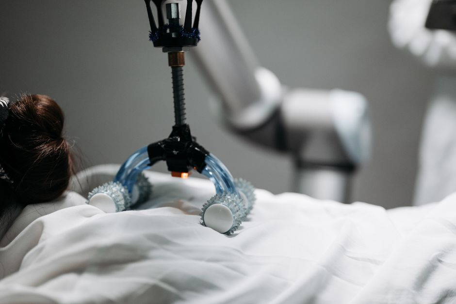

Imagine a world where robots aren't just rigid, clunky machines made of metal and gears, but soft, squishy, and incredibly flexible creatures that can adapt to any shape, squeeze into tiny spaces, and even gently interact with humans without fear of injury. Sounds like science fiction, right? Well, welcome to the exciting realm of Soft Robotics, a revolutionary field that's turning our traditional understanding of robots on its head. At MakerWorks, we believe in exploring the cutting edge of technology, and soft robots are undoubtedly one of the most fascinating frontiers in STEM!
What are Soft Robots? The Squishy Revolution!
For decades, robots have been built primarily from hard materials like metal, plastic, and rigid circuit boards. Think of industrial robotic arms in factories – precise, strong, but also stiff and potentially dangerous if they come into contact with a human. These traditional robots excel at repetitive tasks in controlled environments.
Soft robots, on the other hand, are a new breed. As their name suggests, they are made predominantly from compliant (flexible) materials such as silicone, rubber, and various polymers. Unlike their rigid cousins, soft robots are designed to be:
- Deformable: They can change their shape dramatically.
- Adaptable: They conform to the objects they interact with or the environments they navigate.
- Inherently Safe: Their softness makes them much safer for human interaction.
This fundamental difference in material choice opens up a universe of possibilities that rigid robots simply cannot achieve.
Why Soft Robots? The Need for 'Squishy' Intelligence
Why are scientists and engineers so excited about soft robotics? The answer lies in their unique capabilities, which address many limitations of traditional robots:
Safety First: Human-Robot Interaction
One of the biggest challenges in robotics is creating machines that can work closely and safely with humans. Imagine a robot assisting in a hospital or helping an elderly person at home. If it's made of hard materials, accidental collisions could be harmful. Soft robots, with their gentle and deformable bodies, drastically reduce this risk, making them ideal candidates for collaborative tasks and assistive technologies.
Navigating Complex and Unstructured Environments
Our world is messy and unpredictable. Rigid robots struggle with uneven surfaces, delicate objects, or tight spaces. Soft robots, inspired by nature's most adaptable creatures, can:
- Squeeze through gaps: Like an octopus slipping through a tiny crevice.
- Grasp delicate objects: Imagine picking up a ripe tomato or a fragile egg without crushing it.
- Absorb impacts: Bouncing off obstacles rather than breaking.
Bio-inspiration: Learning from Nature's Masterpieces
Nature is the ultimate engineer. Many soft robots are bio-inspired robots, meaning their design and function are drawn from biological systems. Think about:
- The incredible dexterity and strength of an elephant's trunk.
- The mesmerizing ability of an octopus to change shape and grip objects with its tentacles.
- The way a caterpillar moves or a snake slithers.
These natural wonders demonstrate complex movements and interactions using only soft tissues, providing a blueprint for engineers to mimic in artificial systems.
"The beauty of soft robotics lies in its ability to emulate the natural world, allowing robots to move, feel, and interact in ways previously thought impossible for machines."
How Do They Work? The Magic Behind the Flexibility
So, how do these squishy wonders actually move and operate? It's all about clever material science and innovative actuation methods.
Materials: The Building Blocks of Softness
The core of any soft robot is its material. Common choices include:
- Silicone: Durable, flexible, and easy to mold.
- Rubber: Offers elasticity and resilience.
- Elastomers: Polymers with high elasticity, capable of stretching and returning to their original shape.
These materials are often cast into intricate molds to create specific shapes and internal channels.
Flexible Actuators: The Muscles of Soft Robots
Instead of electric motors and gears, soft robots use specialized "muscles" called flexible actuators:
Pneumatic Robots: Air Power!
One of the most common and effective ways to make soft robots move is through air pressure. These are known as pneumatic robots. Here's how they often work:
- Internal Channels: The soft material (like silicone) is molded with internal hollow channels or chambers.
- Air Inflation: When air is pumped into these channels, the pressure causes the material to expand, bend, or curl in a controlled way.
- PneuNets: A popular design uses a network of pneumatic (air-filled) chambers, often called "PneuNets," which inflate to create complex movements.
- McKibben Actuators: Another type uses a flexible bladder inside a braided mesh. When inflated, the bladder expands, and the mesh constricts, causing the actuator to shorten and pull, mimicking a muscle.
By controlling the air pressure in different chambers, engineers can achieve a wide range of movements, from simple bending to complex grasping actions.
Other Actuation Methods
While pneumatics are dominant, other methods include:
- Hydraulic Actuators: Similar to pneumatics but use liquid (like water or oil) instead of air, offering greater force.
- Electroactive Polymers (EAPs): These "artificial muscles" change shape or size when an electric voltage is applied. They offer quiet and precise movements but are still largely in the research phase for widespread use.
Sensing and Control: Giving Soft Robots Awareness
To perform useful tasks, soft robots need to "feel" their environment and be controlled precisely. This involves:
- Stretch Sensors: Embedded within the soft material, these change resistance as the robot deforms, providing feedback on its shape.
- Pressure Sensors: Measure the internal pressure within actuators, allowing for precise control of movement.
- Microcontrollers: Like Arduino or Raspberry Pi, these act as the "brain," processing sensor data and sending commands to pumps and valves to control the actuators.
Applications: Where Can We See Soft Robots in Action?
The potential applications of soft robots are vast and incredibly exciting:
- Medicine:
- Surgical Tools: Flexible endoscopes that can navigate delicate internal organs with minimal invasiveness.
- Assistive Devices: Soft exoskeletons or rehabilitation gloves that gently help patients regain movement.
- Wearable Robotics: Smart clothing that monitors health or provides support.
- Exploration:
- Deep Sea: Robots that can withstand extreme pressures and navigate complex underwater environments, inspired by marine life.
- Search and Rescue: Robots that can squeeze through rubble to find survivors.
- Space: Lightweight, deformable robots for planetary exploration.
- Manufacturing and Logistics:
- Delicate Object Handling: Grippers that can pick up fragile items like fruits, vegetables, or electronic components without damage.
- Collaborative Robots (Cobots): Working alongside humans in factories safely.
- Everyday Life:
- Interactive Toys: More lifelike and safer robotic companions.
- Smart Prosthetics: More natural and comfortable artificial limbs.
Building Your Own Soft Robot: A Glimpse into the MakerWorld
The beauty of soft robotics is that many fundamental concepts can be explored with relatively accessible materials. With silicone, molds, and small air pumps, you can start experimenting! Understanding how to control these flexible actuators is key. Here's a conceptual look at how you might program a simple pneumatic actuator:
Imagine you have a single soft "finger" actuator that bends when air is pumped into it. You'd need a microcontroller (like an Arduino or Raspberry Pi), a small air pump, a solenoid valve (to control air flow), and maybe a pressure sensor. Your code would tell the valve when to open and close to achieve a desired bend.
# Conceptual Python code for controlling a pneumatic actuator
# This assumes a microcontroller (e.g., Raspberry Pi)
# connected to a pressure sensor and a solenoid valve for an air pump.
import time
# --- Hardware Abstraction (simplified for conceptual understanding) ---
class ActuatorController:
def __init__(self, pump_valve_pin, vent_valve_pin, pressure_sensor_pin):
self.pump_valve_pin = pump_valve_pin
self.vent_valve_pin = vent_valve_pin
self.pressure_sensor_pin = pressure_sensor_pin
self.current_pressure = 0 # kPa
# In a real system, you'd initialize GPIO pins here
print(f"Controller initialized for pump pin {pump_valve_pin}, vent pin {vent_valve_pin}, sensor pin {pressure_sensor_pin}")
def read_pressure(self):
# Simulate reading pressure from a sensor
# In reality: analog_read(self.pressure_sensor_pin) and convert to kPa
return self.current_pressure
def set_pump_valve(self, state): # True for open, False for closed
# In reality: GPIO.output(self.pump_valve_pin, GPIO.HIGH if state else GPIO.LOW)
print(f"Pump valve on pin {self.pump_valve_pin} set to {'OPEN' if state else 'CLOSED'}")
def set_vent_valve(self, state): # True for open, False for closed
# In reality: GPIO.output(self.vent_valve_pin, GPIO.HIGH if state else GPIO.LOW)
print(f"Vent valve on pin {self.vent_valve_pin} set to {'OPEN' if state else 'CLOSED'}")
# --- Control Logic ---
def control_actuator(controller, target_pressure_kPa, duration_s=1):
print(f"\n--- Moving actuator to target pressure: {target_pressure_kPa} kPa ---")
start_time = time.time()
while time.time() - start_time < duration_s:
current_pressure = controller.read_pressure()
print(f"Current pressure: {current_pressure} kPa")
if current_pressure < target_pressure_kPa:
controller.set_pump_valve(True) # Open pump valve to inflate
controller.set_vent_valve(False) # Close vent valve
controller.current_pressure += 2 # Simulate pressure increase
elif current_pressure > target_pressure_kPa:
controller.set_pump_valve(False) # Close pump valve
controller.set_vent_valve(True) # Open vent valve to deflate
controller.current_pressure -= 2 # Simulate pressure decrease
else:
controller.set_pump_valve(False)
controller.set_vent_valve(False)
print("Target pressure reached.")
break
time.sleep(0.1) # Small delay for simulation
controller.set_pump_valve(False) # Ensure valves are closed at end
controller.set_vent_valve(False)
print(f"Actuator settled at {controller.read_pressure()} kPa.")
# --- Main program simulation ---
if __name__ == "__main__":
# Initialize our conceptual controller
my_actuator = ActuatorController(pump_valve_pin=17, vent_valve_pin=18, pressure_sensor_pin=0)
# Sequence of movements
control_actuator(my_actuator, target_pressure_kPa=20, duration_s=3) # Inflate to 20 kPa
time.sleep(1) # Hold for 1 second
control_actuator(my_actuator, target_pressure_kPa=5, duration_s=2) # Deflate to 5 kPa
time.sleep(1) # Hold for 1 second
control_actuator(my_actuator, target_pressure_kPa=15, duration_s=2) # Inflate to 15 kPa
print("\nSoft robot movement sequence complete!")
This code illustrates the basic idea: read sensor data, compare it to a target, and then activate the appropriate valves to adjust the pressure. In a real-world project, you'd use actual hardware libraries (like RPi.GPIO for Raspberry Pi or Arduino's digital/analog functions) and more sophisticated control algorithms, but the core principle remains the same.
The Future is Flexible! Challenges and Opportunities
While incredibly promising, soft robotics is still a relatively young field. There are challenges to overcome, such as:
- Precision: Achieving the same level of precise, repeatable movements as rigid robots can be difficult.
- Speed: Many soft actuators are slower than traditional motors.
- Energy Efficiency: Pumps and compressors can sometimes be power-hungry.
- Durability: Soft materials can be more susceptible to wear and tear.
However, the opportunities far outweigh these challenges. As materials science advances and control algorithms become more sophisticated, soft robots will undoubtedly become an integral part of our lives, transforming industries from healthcare to manufacturing and even personal assistance.
Conclusion: Embrace the Squishy Side of Robotics!
Soft robotics is not just a niche area; it represents a paradigm shift in how we design, build, and interact with robots. By embracing flexibility, adaptability, and bio-inspiration, these squishy machines are poised to solve complex problems and open doors to applications we can only dream of today. From delicate surgical procedures to exploring uncharted territories, soft robots are proving that sometimes, the best way to be strong is to be soft.
Are you excited by the prospect of building robots that can bend, squeeze, and gently interact with the world? Dive into the world of soft robotics! Explore online resources, experiment with simple materials, and keep an eye on the incredible innovations happening right here in India and around the globe. At MakerWorks, we encourage you to get your hands dirty, experiment, and perhaps even design the next generation of flexible, bio-inspired robots!
What kind of soft robot would YOU like to build? Share your ideas in the comments below!